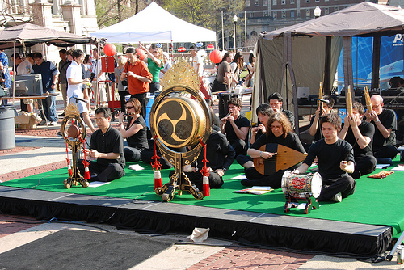
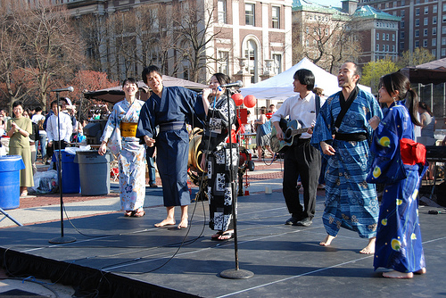
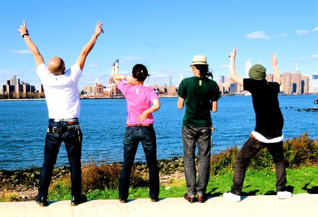
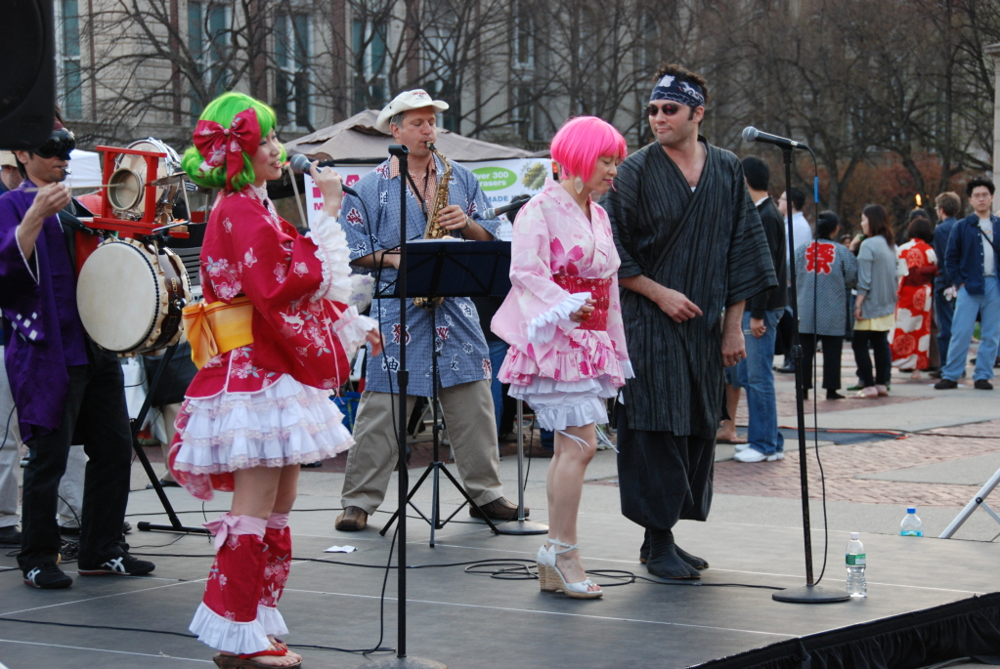
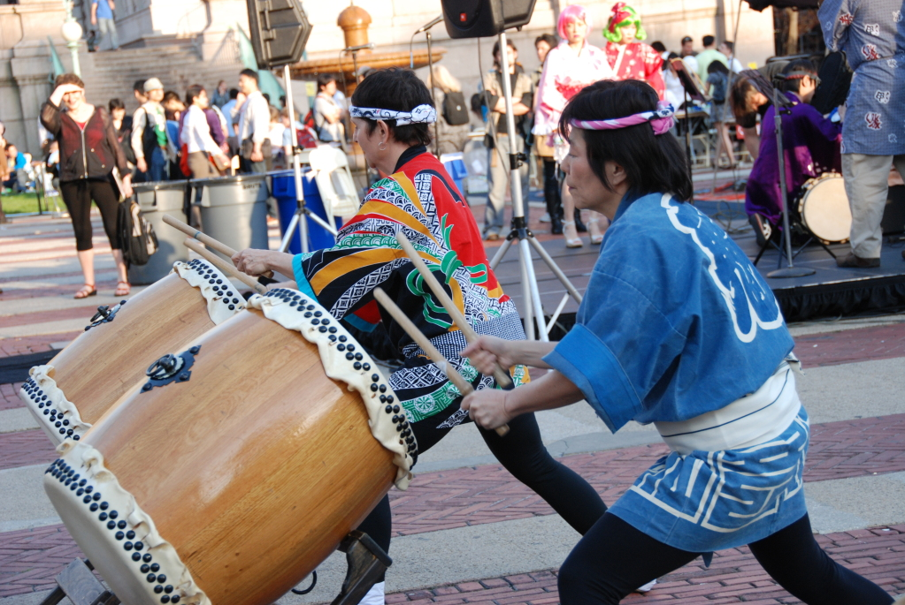
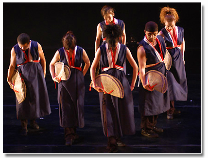

Stage
In addition to crazy festival booths and authentic Japanese restaurants, CJS MATSURI 2009 also prides itself in its spectacular line of stage performances throughout the event! From traditional performing arts to just crazy fun game show-style activites, you won't want to miss a thing!
-
4:00pm - 4:30pm
CU Gagaku Ensemble
Gagaku is a Japanese musical tradition lasting over a thousand years. It's really hard to explain what they sound like with writing, so it's best if you just came out and listened for yourself.
If you want to learn more about CU Gagaku, please visit http://www.medievaljapan.org/current-activities-programs/gagaku-hogaku-at-columbia.html.
 -
4:30pm - 4:45pm
CU Japanese Program presents "Musical Senseis"
Those who have taken a Japanese language class at Columbia University might recognize these performers. That's because these performers aren't really performers at all! They are the Japanese program at Columbia University's finest teachers! They are going to embarass themselves (or perhaps not!) by singing at CJS MATSURI 2009. In addition, they're providing us with a little surprise that even CJS doesn't know about!
 -
4:45pm - 5:15pm
New York Wild Rice
Vocal & Guitar: Ichizo / Bass: Yosuke / Drums: Shingo
We are New York Wild Rice. We mainly play English-language covers of legendary 80s/90s Japanese punk band The Blue Hearts. We play loud, and we play hard. We plan to eventually incorporate some original songs, but for now, our mission is to convey the passion and strong message of The Blue Hearts to the people of New York.
New York Wild Rice made their debut at the 2008 Nippon Jam hosted by the NYJSA. -
5:15pm - 6:00pm
Uzuhi
Far East from their Mother Land, in New York City, The Japanese Punk Rock band, Uzuhi, was born in Fall 2004. Uzuhi means “the Sun” in Japanese. The origin of the name came directly from their strong creed of music, “Music Has No Borders.” As the Sun shines the world, Uzuhi plays music toward the world.
Check out their myspace page at http://www.myspace.com/uzuhi.
 -
6:00pm - 6:45pm
Happy Fun Smile
CJS is happy to invite Happy Fun Smile again this year after their awesome performance in 2005. Happy Fun Smile is an Okinawa-style band based here in New York. We always love watching them perform.
Listen to some of their songs on their myspace page at http://www.myspace.com/happyfunsmile
 -
6:45pm - 7:30pm
CU Teacher's College Taiko Society
TAIKO is Japanese drums. Drums have a long and significant history in Japan. Thanks to the Taiko Society at CU's Teacher's College, you can see first hand the exhiliration of Japanese taiko. Not for the weak of heart...
If you want to learn more, visit their website at http://www.tc.columbia.edu/students/taiko/.
 -
7:30pm - 8:00pm
10Tecomai
The body goes beyond words.
It is neither a full length novel nor a two hour theatrical play. All is dedicated in a song that does not even last a mere five minutes. There, lies an almost tragic, yet passionate expression of emotion.
Japanese culture and hundreds of other cultures Our project's foundation is created when these meet. It is based on a traditional yet contemporary dance form called Yosakoi.
While holding a prop called "Naruko" in both hands, The dancers intensely and dramatically dance as the chanter's cryinstigates the piece.
Various expression is created when all of the above is combined.
"10tecomai", a Yosakoi Dance Project. This dance won't stop. This dance can't be stopped.
To find more about 10tecomai visit their webpage at http://www.10tecomai.com/.
